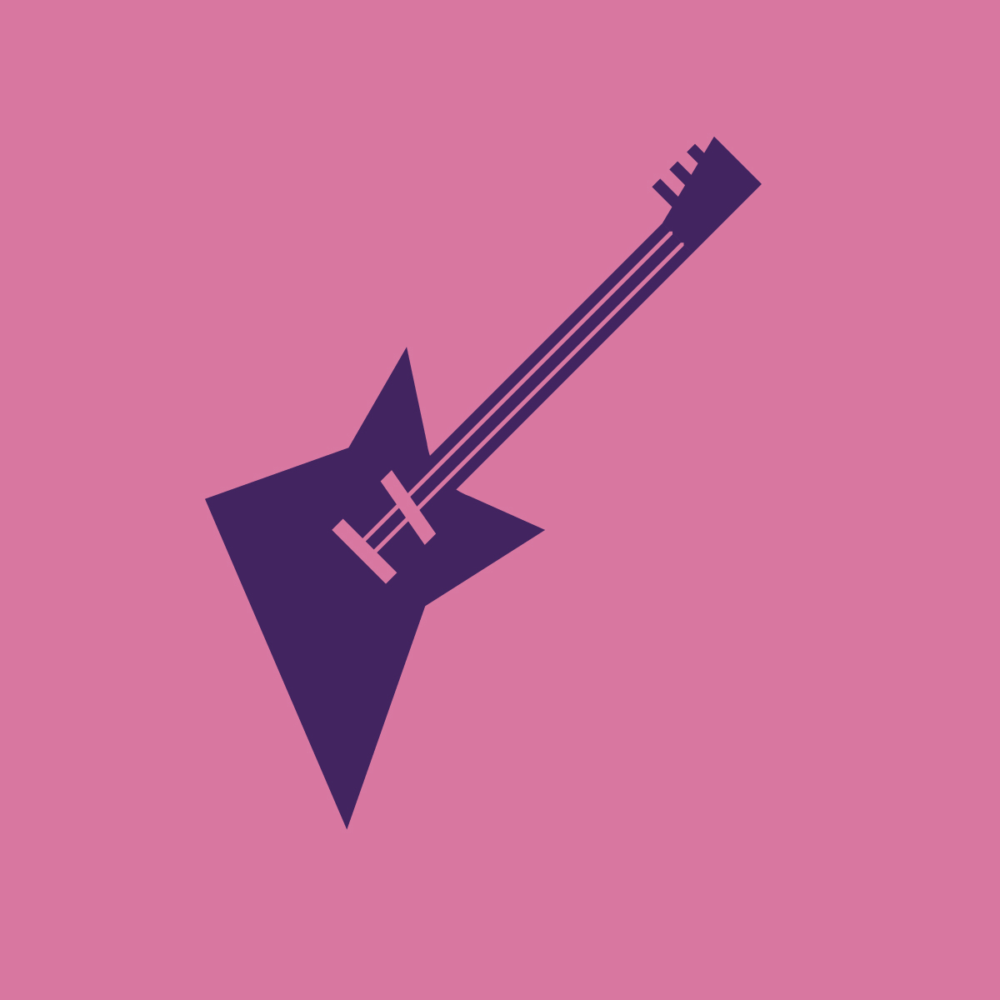
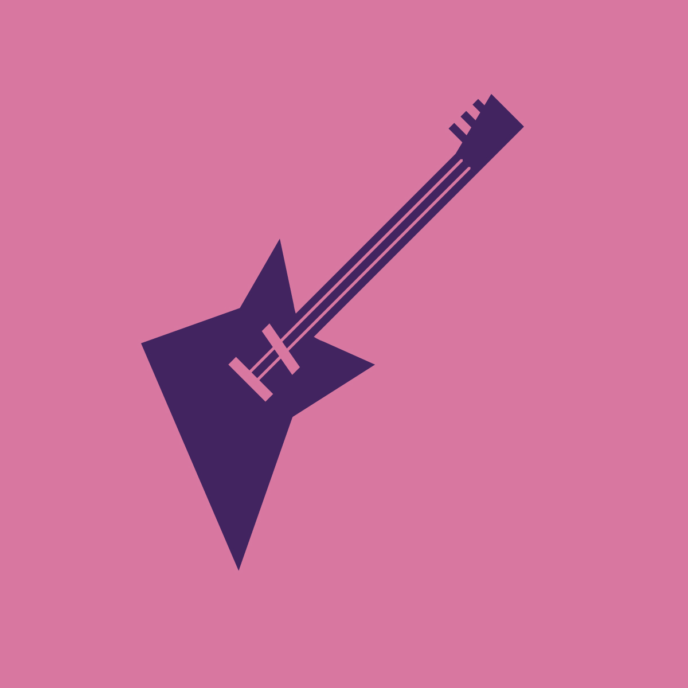

Creative Suite
Business Card
This was a concept I created for a personal business card. This project is what inspired me to create a personal logo, which is used on my portfolio site.


Spotify Playlists view
I am a huge fan of music, so I chose to practice my Illustrator skill on a series of cover images for my Spotify playlists. I originally started with 16 images, but as my playlists grew I expanded the project.


 



Coasters
Each student created a set of matching coasters that were then printed on wood using a laser-cutter. I chose to use the same image (the right-most image below) with various quotes related to tea or coffee.


Nautical Icons
The first project involving Adobe Illustrator, I was tasked with creating a set of icons with a unifying theme. I chose to make cartoony nautical icons, because of my dad's recent interest in sailing.